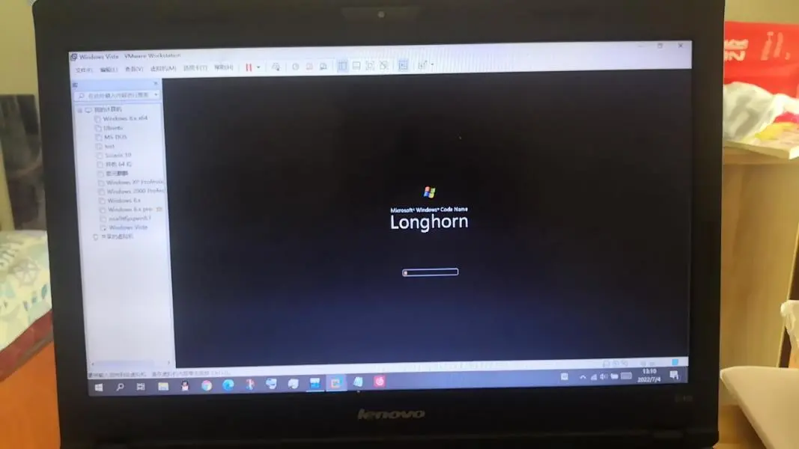
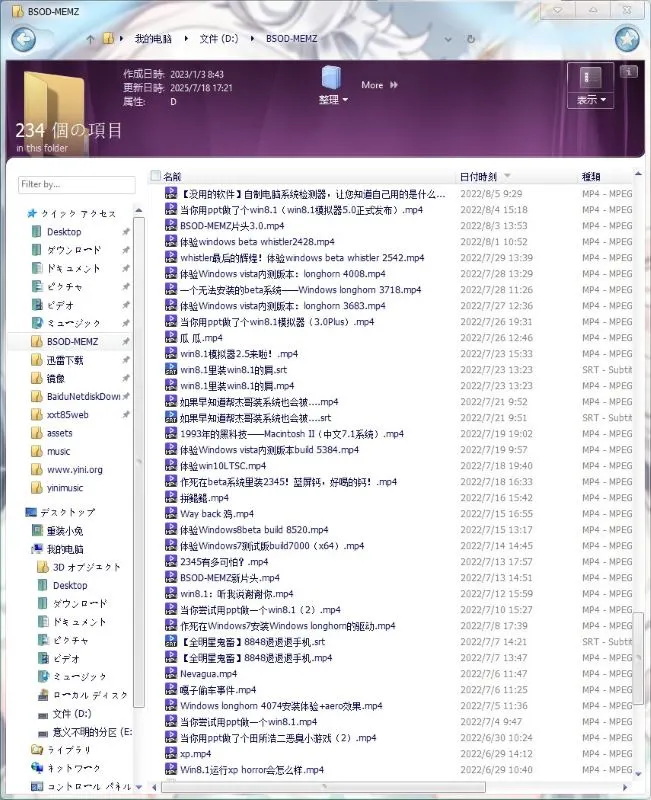
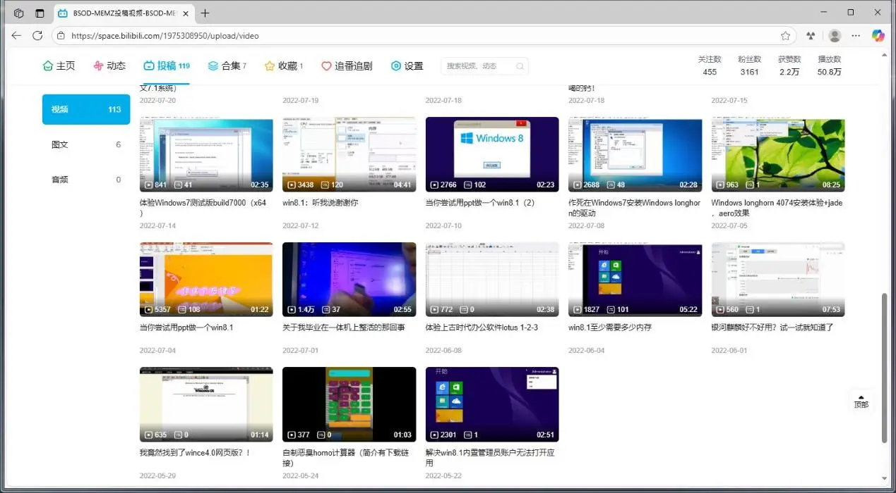
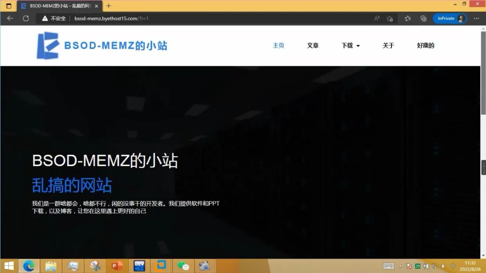
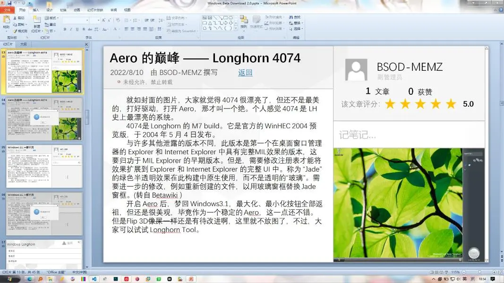
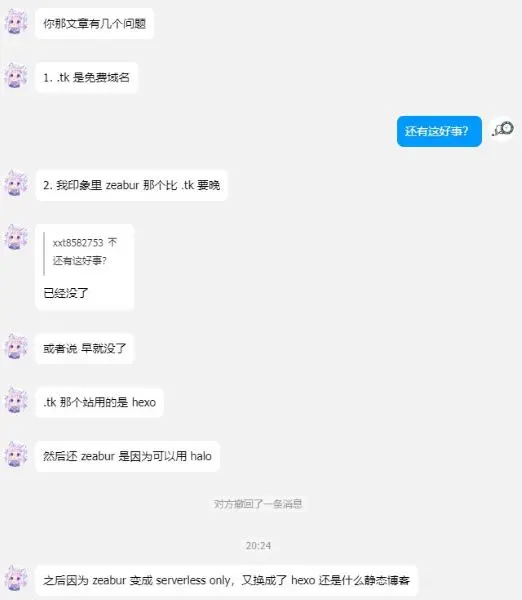
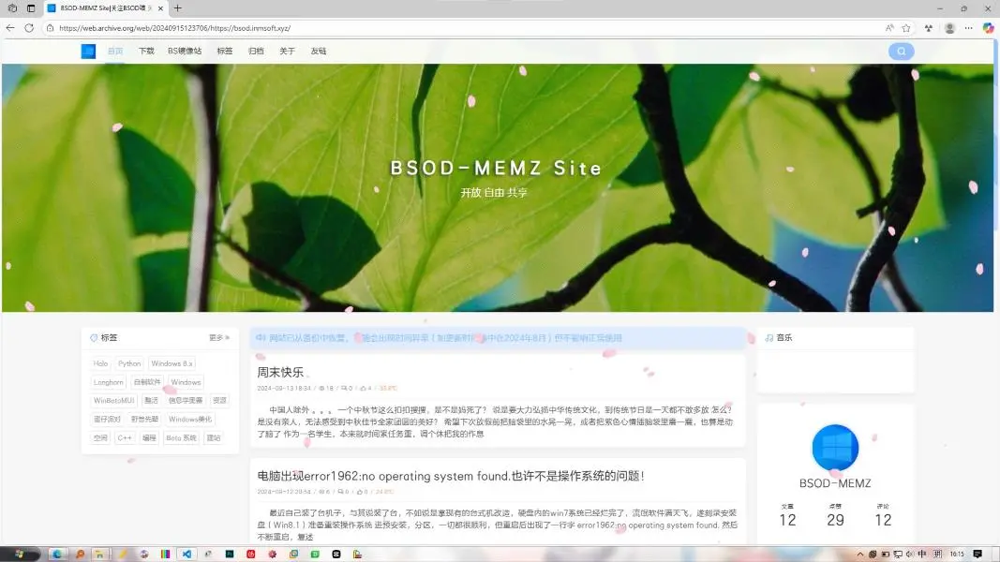

我的成长之路
我学编程也有点年头了，给大家分享下xxtsoft的前世今生
远古时期（2018-2020）
2018年，我开始学习Scratch，也就是那个时候，在朋友的迫害引领下，我进入了编程猫社区，创作了一些小程序，那时我只有八九岁，虽然做出来的东西非常粗糙，但也为我以后的编程学习奠定了基础
探索时期（2020-2022上旬）
这个时候我已经初步具备一些编程思维，开始尝试Python等正经编程语言。2022年初，我开始打C++信息奥赛，那个时候我有了第一台属于我的电脑，我还记得那是一台早已淘汰多年的低性能笔记本，开机都要3分钟，但也正是这台电脑，让我学会使用Windows和Office，也学会了重装系统之类比较“高级”的操作
早期UP主时期（2022-2024）
早期视频（2022-2023）
2022年下半年，我开始接触视频剪辑，尝试制作一些简单的短视频，并在B站发布。虽然起初的作品质量不高，内容也比较枯燥，比如装虚拟机之类，但我乐在其中，并不断学习和进步
我也觉得我是在接触B站后才正式接入互联网，开始了解各种网络热梗，也在网上结识了很多新朋友
此外，我还做了些PPT游戏，虽然数据不是很可观，但我能收到很多点赞和善意的评论，这让我感到很开心
第一版网站（2022-？）
In fact，我一直想要一个属于自己的个人网站，但我并不会HTML和CSS，但是在两位朋友帮助下，我不知道用啥搞了个网站出来，与其说是我的网站，不如说是他们的，因为我几乎没干啥事，就只是打了点字，没搞一点技术活
此外，WBD上的功能也终于可以在网站实现了，再也不用用PPT做展示啦
第二版网站（？-？）
坏了，那估计真成LostMedia了，我现在找不到任何截图，我也忘记域名，更忘记它长什么样了。但是根据@AbCd回忆，当时用的bsodmemz.tk免费域名
第三版网站（？-？）
这个网站真的存在吗？
@AbCd想起他用的Zeabur，同样我也不记得了，当时应该用的Hexo，但内容没变，换汤不换药
现代（2024-？）
第四版网站（2024-2025上旬）
终于有个正经网站啦！@AbCd买了个域名：inmsoft.xyz，他分了我一个bsod.inmsoft.xyz，然后用了@LAGSNES的服务器，然后部署了下Halo，然后我就随便整了下
但是我tm又没留截图！还好archive.org上有，下图是2024年9月的存档，但那个时候我的网站还只是初级阶段，真正完全建好得11月了
2024年11月，我买了xxtsoft.top，就是现在这个域名（欸对哦，我的域名要续费了，都快忘了）但是新版网站还得中考完后建
第五版网站（2025/6-至今）
2025年6月，经过了三年有期徒刑，我终于出狱了，并且拿到一个还算可以的分数。我也拿到了自己的电脑，虽然最开始网页框架是AI写的，但我也开始学习前端开发，逐渐掌握了HTML、CSS，静态网站就是难做，代码还得我自己写，不知多少日日夜夜，我坐在电脑前，用VSCode输入一个一个标签，让这个网站从毛胚变为精装
总结
总的来说，我的网站因LAGSNES的服务器各种重构，但是我非常感谢他，让我的网站能在互联网中生根发芽，在人们心中永远留存，而不是让一堆枯燥的HTML文件孤独地躺在本地磁盘中
回望我的成长之路，我从一个对编程一无所知的小白，成长为现在能够独立借助一些工具搭建网站的开发者，这其中的每一步都离不开我的努力和坚持，更离不开大家对我的支持和帮助，如今我已是一名高中学生，课业压力增加，但三年的高中生活不会消减我对编程的热爱。我将继续探索技术世界，让课本上的知识为代码赋能，在编程道路上不断前行。